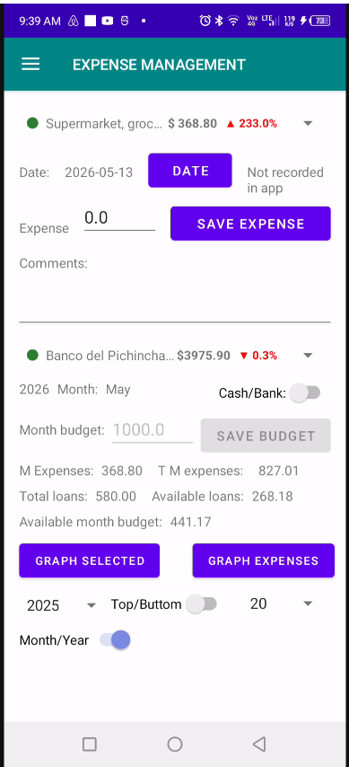
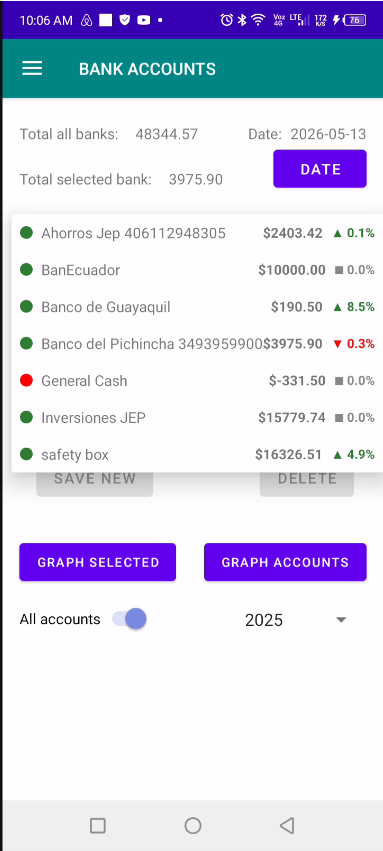
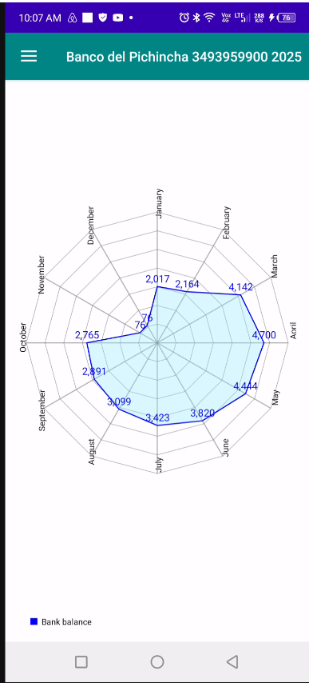

Sincronizzazione Desktop & Mobile
Interfaccia di sincronizzazione che collega l'applicazione mobile al software desktop di gestione finanziaria.

Interfaccia Principale dell’Applicazione Mobile
Dashboard principale dell’app mobile che offre accesso agli strumenti finanziari, al monitoraggio delle spese e alle analisi bancarie.

Indicatore Comparativo delle Spese Mensili
Indicatore che mostra le spese mensili correnti per la data selezionata confrontate con lo stesso periodo del mese precedente.

Registrazione delle Transazioni Bancarie
Interfaccia principale per registrare e gestire le transazioni bancarie direttamente dall’app mobile.

Indicatore del Saldo dei Conti Bancari
Indicatore che mostra i conti bancari, i saldi attuali e l’andamento dei saldi rispetto allo stesso giorno del mese precedente.

Analisi Mensile dei Saldi dei Conti
Grafico che visualizza i saldi mensili del conto bancario selezionato o il totale combinato di tutti i conti durante l’anno selezionato.

Distribuzione Annuale dei Saldi Bancari
Grafico a ciambella che visualizza i saldi annuali finali distribuiti tra tutti i conti bancari.

Analisi Radar delle Spese
Grafico radar che mostra le spese mensili totali o le spese annuali per l’anno selezionato.

Distribuzione Annuale delle Spese
Grafico a ciambella che visualizza la distribuzione delle spese annuali per l’anno selezionato.